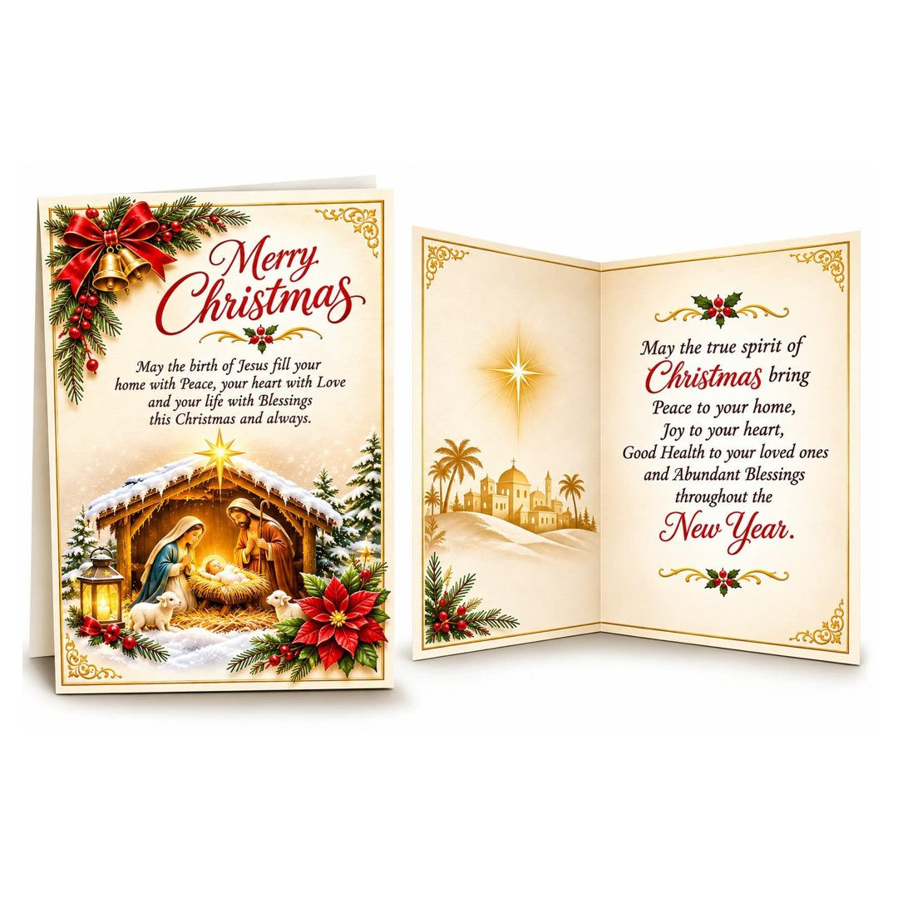

Christmas Gift Ideas 2026: Tags, Bookmarks, Cards and Calendars
Small printed gifts that make wrapping, hampers and stockings feel finished. Everything here is designed by us in Goa and delivered across India. Order by 18 December for delivery before Christmas.
1. Watercolour Christmas gift tags
Snowmen, reindeer and gingerbread in soft watercolour. A set of 12 tags in 12 designs on 300 GSM card, each with a hanging hole for ribbon.

2. Poinsettia gift tags for hampers
Red and green poinsettias on a damask pattern. A set of 8 pre-punched tags on 300 GSM card, made for festive wrapping and hampers.

3. To/From tags you can write on
Eight designs with reindeer, snowflakes and festive motifs in red and green, with To and From lines ready to fill in and tie on.

4. Tasselled Christmas bookmarks
Santa, reindeer, snowman and tree, in a set of 4 with tassels. A stocking filler every reader will use.

5. A Santa and snowman greeting card
A cheerful winter scene with a printed greeting inside and space for your own Christmas wishes.

6. Handmade tabletop Christmas trees
A set of 2 layered glitter foam trees with bead details, a star on top and a sturdy red base.

7. A 2027 desk calendar they keep all year
Spiral-bound 12-month calendars on 300 GSM card, in A5 or A6, and we can personalise them with your logo. A Christmas gift for customers and teams that stays on the desk until next December.

8. Bookmarks for the New Year
Happy New Year bookmarks with tassels, for the week between Christmas and 1 January.

9. Nativity and snowman bookmarks
A set of 4 watercolour bookmarks with red bows and gold borders: a Merry Christmas tree, a snowman, "Jesus is the Reason for the Season" and a nativity scene. Lovely for church, Sunday school and stocking fillers.
10. A nativity Christmas card
The Holy Family in a snowy stable on the front, with a Christmas and New Year blessing printed inside. A 5 by 7 inch folded card that comes with an envelope.

Gifting for a church, school or office?
Tell us how many you need and we will send you a price for bulk or personalised Christmas tags, bookmarks and calendars.
Shop all on Amazon Order on WhatsAppAlso see our wedding stationery ideas.